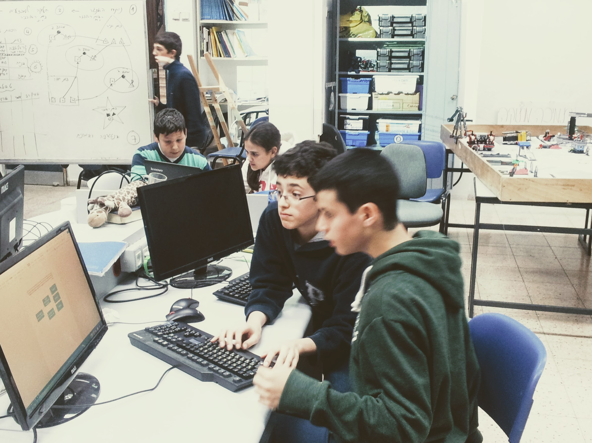
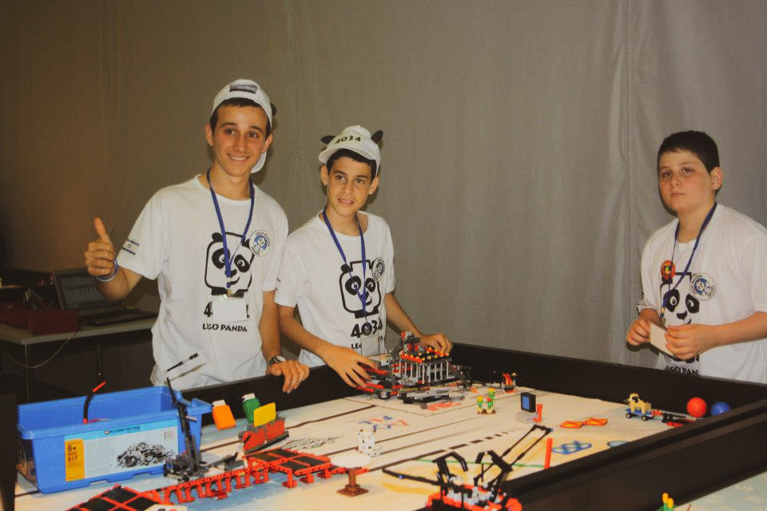
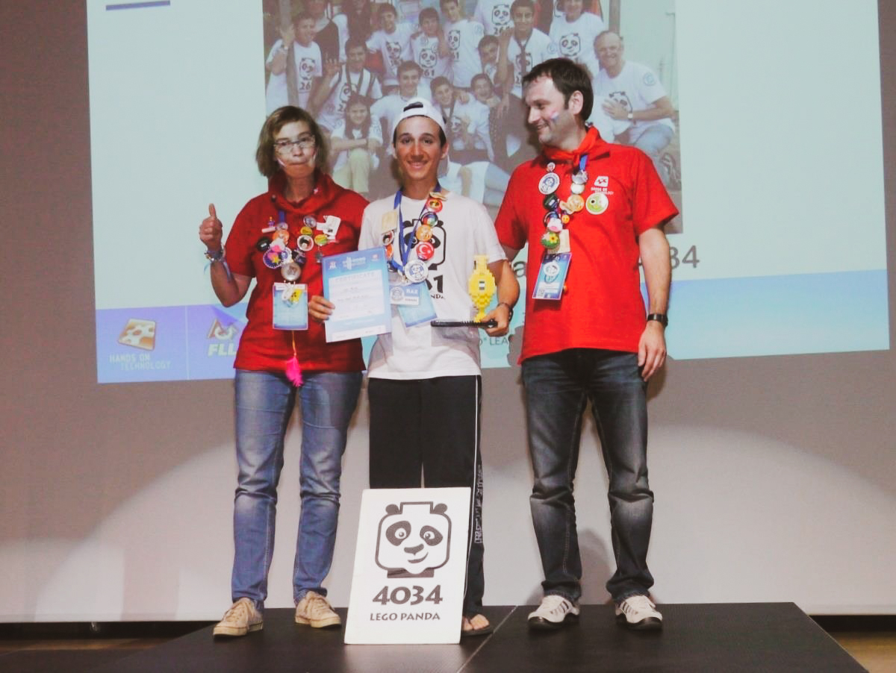

Mentoring
FIRST Lego League and beyond

After high school graduation, I volunteered to establish a new robotics club at the local middle school and lead a team to compete in the FIRST LEGO League.

I spent the following year teaching math, programming, and practicing social skills with my students. They were very excited for our meetings where we established a unique culture of play and collaboration.

There were over 400 teams competing in Israel that year and although we were rookies, we put on a show. It was crazy! After winning the regionals and the nationals, we flew to Germany to compete at the FLL Open European Championships (2013) with the best teams in the world.
Our hard work and dedication led us to win 2nd place internationally. I was honored to be awarded ‘best young mentor’ in the championship shortly afterwards.

Since then I've been teaching robotics and 3D printing at summer camps in Israel and the United States (Camp Yavneh), as well as taught Python programming to ultra-orthodox women. I'm passionate about working with children and minorities towards a more just and equitable society.
-2.jpg)
-2.jpg)